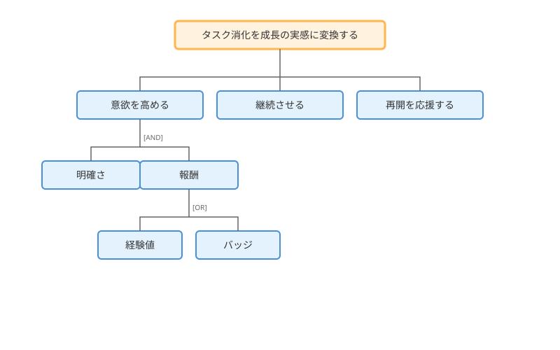
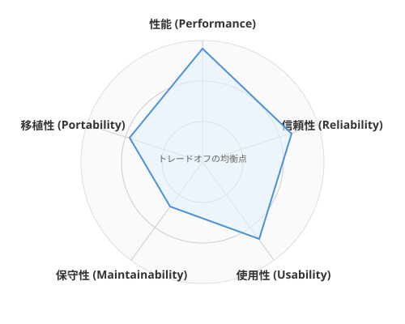

1.4 どう整理するか？——ゴール指向要求分析
導入: 「何を作るか」の前に「なぜ作るか」
ここまでで、なぜ聴くことが重要か（1.1）、どう聴くか（1.2）、そしてAIペルソナと対話して仮説を検証する方法（1.3）を学びました。
しかし、集まった情報はまだ「断片」に過ぎません。「レベルアップ感が欲しい」「小さな達成感を積み重ねたい」「チームで盛り上がりたい」——これらのバラバラな願いを、どうやって一貫したシステムへとまとめるのでしょうか？
ここで登場するのがゴール指向要求分析です。RPGで言えば「メインクエスト」と「サブクエスト」の関係を整理し、冒険の全体地図を描く技術です。
理論的背景: ゴール指向要求分析とは
「機能」ではなく「目的」から始める
従来の要求分析では、こう聞きがちです。
「どんな機能が欲しいですか？」
ゴール指向要求分析では、問いの方向が逆転します。
「何を達成したいですか？」
この違いは決定的です。機能から始めると「ボタンを追加する」「画面を作る」といった手段の議論に陥ります。ゴールから始めれば、本当に必要なものが見えてきます。
ゴールの階層構造

ゴールは階層的に分解できます。
上位のゴールは「なぜ」を、下位のゴールは「どうやって」を表します。
【戦略ゴール（Why of Why）】
└── なぜこのシステムを作るのか？
【ユーザーゴール（Why）】
└── ユーザーは何を達成したいのか？
【サブゴール（How）】
└── それをどうやって実現するか？
【タスクゴール（What）】
└── 具体的に何をするか？上から下へ「How?（どうやって？）」で分解し、下から上へ「Why?（なぜ？）」で検証します。どの階層でも「なぜ？」に答えられなければ、そのゴールは不要かもしれません。
AND/OR分解

ゴールの分解には2つのパターンがあります。
AND分解: すべてのサブゴールを達成しないと親ゴールは達成できない。
ユーザーがタスクを楽しく消化する
├── [AND] タスクに達成感がある
├── [AND] 継続するモチベーションがある
└── [AND] 進捗が可視化されているOR分解: いずれかのサブゴールを達成すれば親ゴールは達成できる。
継続するモチベーションがある
├── [OR] 経験値・レベルで成長を実感する
├── [OR] ストリーク（連続日数）で習慣化する
└── [OR] 仲間との競争・協力で刺激を得るOR分解は設計の選択肢を表します。すべてを実装する必要はなく、優先順位をつけて選べます。
実践例: QuestForgeのゴールツリー
QuestForgeのゴールを体系的に分解してみましょう。
戦略ゴール
「日々のタスク消化を、成長の実感と達成感に変換する」
ゴールツリー全体像
日々のタスク消化を成長の実感と達成感に変換する [戦略ゴール]
│
├── タスクに取り組む意欲を高める [ユーザーゴール 1]
│ ├── [AND] タスクが明確で取り組みやすい
│ │ ├── タスクを適切な粒度に分解できる
│ │ └── 難易度が可視化されている
│ └── [AND] 取り組みの先に報酬がある
│ ├── [OR] 経験値を獲得できる
│ ├── [OR] バッジ（実績）を獲得できる
│ └── [OR] レベルアップの演出がある
│
├── 継続するモチベーションを維持する [ユーザーゴール 2]
│ ├── [OR] ストリーク記録で習慣化を促す
│ ├── [OR] レベル進捗で長期的成長を可視化する
│ └── [OR] 過去の達成を振り返れる
│
└── 再スタートを応援する [ユーザーゴール 3]
├── [AND] 再挑戦を歓迎する設計
│ ├── ストリークが切れても気軽に再開できる
│ └── 未完了タスクも次の一歩として表示する
└── [AND] 再開のハードルが低い
├── 1つの小さなタスクから再開できる
└── 復帰ボーナスで迎え入れるゴールツリーから見える設計判断
このツリーから、いくつかの重要な設計判断が浮かび上がります。
-
ユーザーゴール3「再スタートを応援する」 は、QuestForgeならではの視点です。1.2節の対話で「やる気が失せる」という声を聴いたからこそ、ここにゴールが立ちました。
-
OR分解の選択: 「継続のモチベーション」には3つの手段がありますが、MVP（最小限の製品）ではまず「ストリーク」に絞る、という判断ができます。
-
AND条件の確認: 「取り組む意欲を高める」には「明確さ」と「報酬」の両方が必要です。片方だけでは不十分。
AI時代のアプローチ: ゴール分析の加速
AIにゴールツリーを補強してもらう
自分で作ったゴールツリーをさらに充実させましょう。AIに「追加できるゴール」を提案してもらいます。
以下はタスク管理アプリ「QuestForge」のゴールツリーです。
このツリーをさらに充実させるために、
追加すると良さそうなゴールを3つ提案してください。
[ゴールツリーをここに貼り付ける]ゴール間のバランスを探る
異なるゴール同士を両立させる工夫が必要な場面があります。
例えば「タスクを細分化する」と「画面をシンプルに保つ」は、両立のための工夫が求められます。AIにバランスの取り方を提案してもらいましょう。
以下のゴールツリーの中で、両立に工夫が必要なゴールの組み合わせを
列挙してください。
それぞれについて、うまくバランスを取る方法を提案してください。非機能要求への展開：冒険の品質を守る
ゴールツリーは、目に見える機能だけを描くものではありません。工学的に極めて重要なのが、非機能要求（Non-Functional Requirements: NFR）です。機能が「何ができるか」なら、非機能要求は「どのくらいの品質でできるか」を定義します。
冒険に例えるなら、機能要求は「空を飛ぶ魔法」ですが、非機能要求は「何時間飛び続けられるか（信頼性）」「何人まで乗れるか（効率性）」「詠唱中に攻撃されても発動するか（堅牢性）」といった魔法の制約条件です。
ユーザーがストレスなく使える [品質ゴール]
├── [AND] 操作から1秒以内に応答する（性能）
├── [AND] 通信が途切れてもデータが失われない（信頼性）
└── [AND] 初見でも迷わず操作できる（使用性）これらは「機能」ではないため見落とされがちですが、これらが欠けると、どんなに素晴らしい機能があってもユーザーは離れてしまいます。ゴール指向分析の段階で、これらの「品質の願い」も明文化しておくことが、後の設計やテストの道標となります。
ハンズオン: ゴールツリーを構築してみよう
ステップ1: 戦略ゴールを1文で書く
あなたのプロジェクトが究極的に達成したいことを1文で書いてください。「〜を〜に変換する」「〜によって〜を実現する」の形が書きやすいです。
ステップ2: ユーザーゴールを3つ挙げる
戦略ゴールを達成するために必要な「ユーザー視点のゴール」を3つ挙げてください。1.1節や1.2節で得た洞察を活用しましょう。
ステップ3: AND/ORで分解する
各ユーザーゴールを1〜2段階、AND/ORで分解してください。
- 「すべて必要」ならAND
- 「どれか1つでよい」ならOR
ステップ4: AIに検証してもらう
完成したゴールツリーをAIに見せ、以下を問いかけてみましょう。
- 「追加すると良いゴールはあるか？」
- 「両立させたいゴール同士の関係は？」
- 「優先順位をつけるとしたら？」
まとめ
- ゴールから始めよ: 「何を作るか」ではなく「なぜ作るか」を問うことで、本質を見失わない。
- 階層的に分解せよ: 戦略ゴール→ユーザーゴール→サブゴール→タスクと、抽象から具体へ降りていく。
- AND/ORで選択肢を可視化せよ: AND条件は「必須要件」、OR条件は「設計の選択肢」を示す。
- ゴール間のバランスを探れ: 両立が必要なゴールを見つけ、バランスの取り方を記録する。
- 非機能要求も忘れるな: 性能やUXのゴールも明示的にツリーに含める。
さらに学ぶためのリソース
- 📚 書籍: Axel van Lamsweerde "Requirements Engineering: From System Goals to UML Models to Software Specifications"（ゴール指向要求分析の集大成。KAOS手法の提唱者による教科書）
- 📄 論文: Axel van Lamsweerde "Goal-Oriented Requirements Engineering: A Guided Tour"（GORE分野の歴史と主要な技法を一望できる優れたレビュー論文）
- 📚 書籍: カール・ウィーガーズ『ソフトウェア要求 第3版』（第12章に非機能要求の扱いが詳述されています）
AIへの詠唱例
このセクションで学んだことを実践するためのプロンプト：
# ゴールツリーの生成
以下のプロジェクト概要から、ゴールツリーを作成してください。
**プロジェクト**: QuestForge（タスク管理RPGアプリ）
**戦略ゴール**: 日々のタスク消化を成長の実感と達成感に変換する
以下の形式で出力してください：
- 戦略ゴール（1つ）
- ユーザーゴール（3〜5つ）
- 各ユーザーゴールをAND/ORで2段階に分解
- 非機能要求ゴール（2〜3つ）
各ゴールには [AND] または [OR] のラベルをつけてください。# ゴールツリーからユーザーストーリーへの変換
以下のゴールツリーの末端（リーフ）ゴールを、
それぞれユーザーストーリー形式に変換してください。
形式: 「[ペルソナ]として、[ゴール]したい。なぜなら[理由]だから。」
さらに、各ストーリーにMoSCoW優先度（Must/Should/Could/Won't）を
付与してください。
[ゴールツリーをここに貼り付ける]